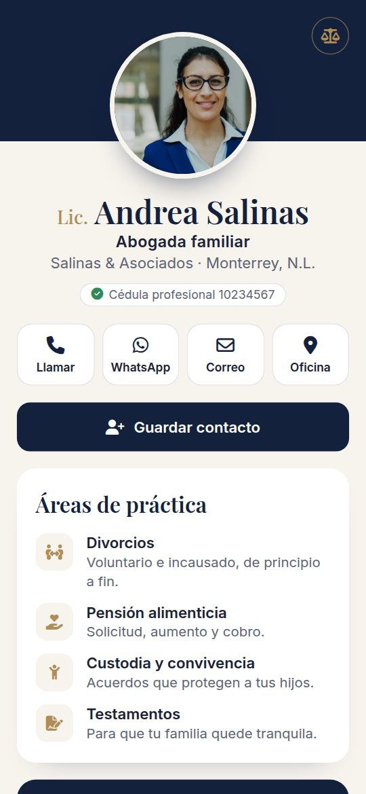
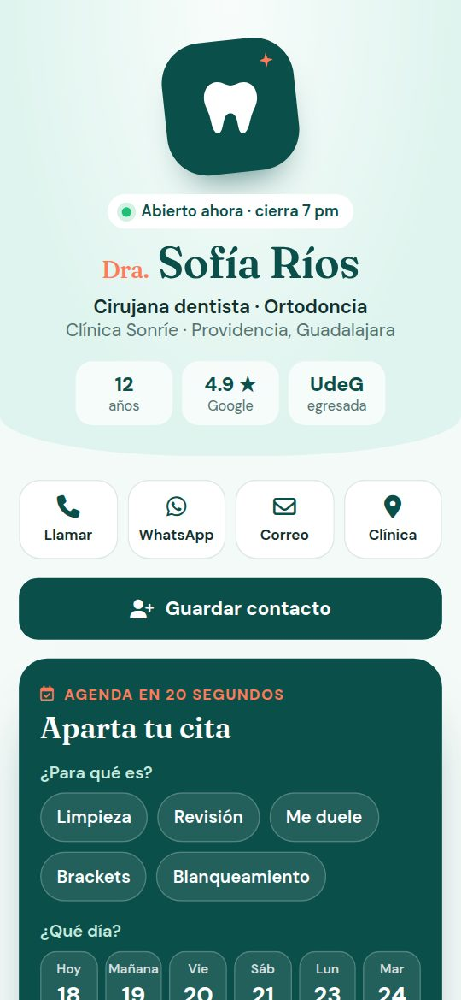
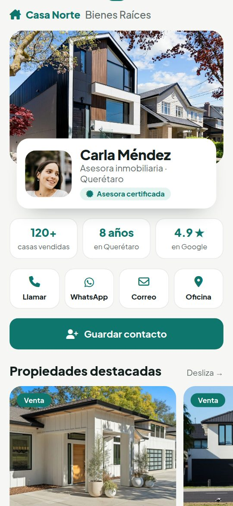
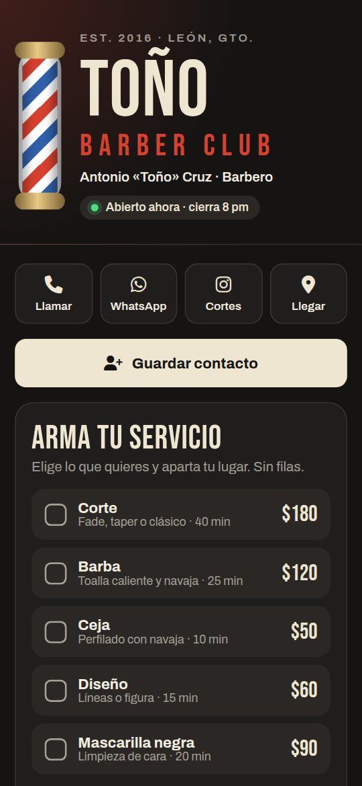
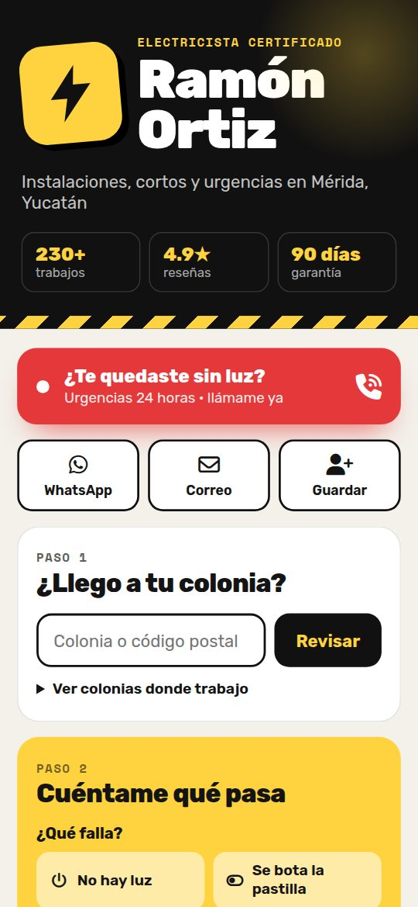
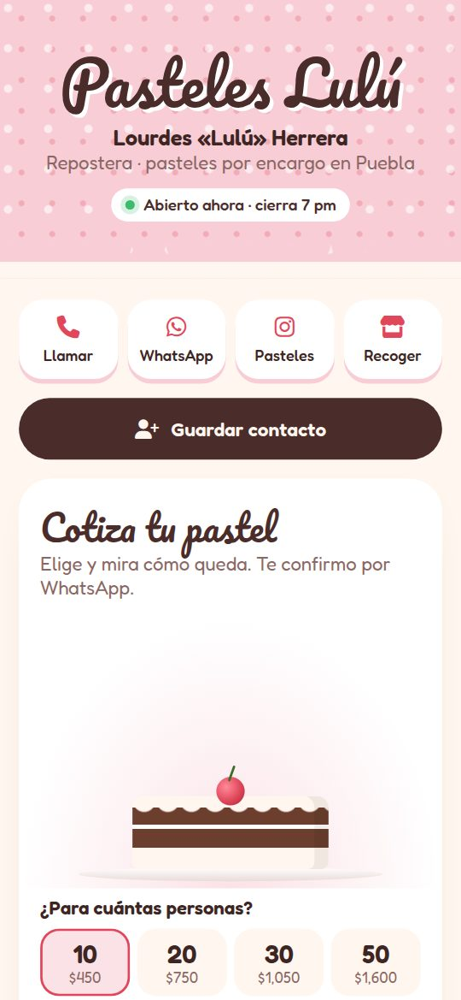
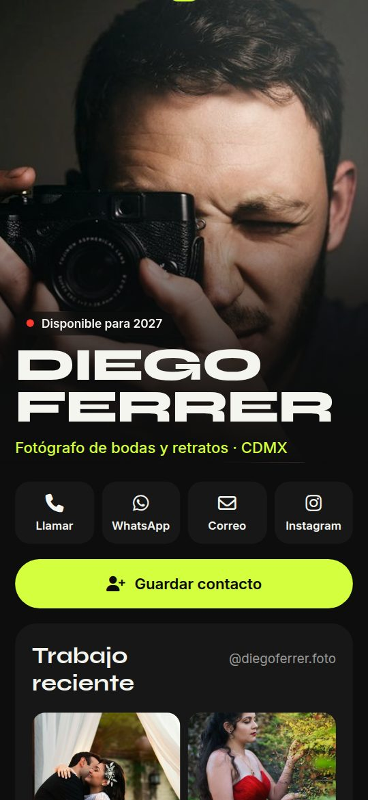

Abogada
Abogados, contadores y consultores
Sobria, con áreas de práctica, cédula y horario.
- Guardar contacto
- Mi QR
- Consulta gratis
Tarjetas digitales · por Yael González
Compartes tu enlace o tu QR y quien lo abre te guarda en sus contactos, ve lo que haces y te escribe por WhatsApp. Y no se acaban como las de papel. Toca un ejemplo y pruébalo.
¿Necesitas otra cosa? Mira el catálogo completo
Para que te guarden y te agenden sin buscarte.
Desliza para ver más →

Abogados, contadores y consultores
Sobria, con áreas de práctica, cédula y horario.

Dentistas, doctores y terapeutas
Aparta su cita eligiendo motivo, día y turno.

Asesores y vendedores
Propiedades destacadas con «Me interesa».
Con lo que cada negocio necesita para que le escriban.
Desliza para ver más →

Barberías, estéticas y uñas
Arman su servicio, ven el total y apartan hora.

Electricistas, plomeros y técnicos
Urgencias, «¿llego a tu colonia?» y el problema por WhatsApp.

Reposteras y negocios desde casa
Cotiza su pastel y lo ve cambiar mientras elige.

Fotógrafos, diseñadores y artistas
Con portafolio y paquetes a la vista.
Para entregar en persona: pones tu nombre y te salen 10 tarjetas por hoja con el QR de tu tarjeta digital. La escanean y te guardan.
Armar mi tarjeta impresa